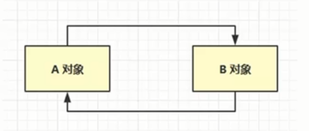

1、如何判断对象可以回收
2、垃圾回收算法
3、分代垃圾回收
4、垃圾回收器
5、垃圾回收调优
一、如何判断对象可以回收
1、引用计数法；
只要有引用指向该对象，该对象的计数+1，如果有引用不再指向它了，让计数-1，当引用计数变为0的时候，被判定为垃圾。
弊端：

这时，A，B对象都不会被判定为垃圾
2、可达性分析算法
根对象 ：肯定不会被回收的对象
在对象回收之前，先对堆内存中的对象进行扫描，如果堆中的对象没有被根对象直接或者间接的引用，那么它就可以作为垃圾被回收。

工具：（java堆的分析工具）

通过虚拟机命令抓取快照信息：
jmap -dump:format=b,live,file=文件名.bin 进程号（format 是文件格式为二进制，live参数会主动进行一次垃圾回收）
通过 eclipse Memory Analyzer(MAT)打开存储的快照文件。
查看GC Root对象

根对象：
System Class:系统类
Native Stack:java虚拟机进行方法调用时调用的操作系统的方法
Thread:活动线程
Busy Monitor:加锁的类（
synchronized）
五种引用：
1、强引用
2、软引用
3、弱引用
4、虚引用
5、终结器引用

上图中，实线为强引用。
强引用：GC Root对象直接引用的对象，只要有GC Root对象强引用该对象，它就不会被垃圾回收器回收。
软引用：若垃圾回收器发生了一次垃圾回收，发现内存不够，就会把软引用指向的对象也回收掉。
弱引用：若垃圾回收器发生了一次垃圾回收，不管内存够不够，都会把弱引用指向的对象回收掉。
想要对软引用和弱引用进行处理，需要借助引用队列（可以配合引用队列使用，也可以不配合引用队列使用）。
虚引用：
例如：
使用ByteBuffer对象使用直接内存时，会创建一个虚引用Cleaner指向该对象，当ByteBuffer对象被回收时，Cleaner会进入引用队列，ReferenceHandler守护线程会去这个引用队列中找有没有新入队的Cleaner对象，如果有，它就会调用Cleaner对象的clean()方法，clean方法去调用Unsafe对象的freeMemory()方法，释放直接内存。
终结器引用：
Object类中的finallize()（终结方法），当一个对象重写了终结方法（JVM就会创建终结器引用对象指向它），并且没有强引用指向它时，它就可以被当成垃圾进行回收，在垃圾回收该对象之前，JVN就会将该终结器引用加入引用队列，finallizeHandler守护线程
会去该引用队列中找有没有新加入的终结器引用，如果有就会根据该终结器引用找到要作为垃圾回收的对象，并且调用finallize()方法。在下一次垃圾回收的时候，才会真正的把该对象回收掉。
不推荐使用finallize()方法释放对象的理由：
内存释放效率低，因为finallizeHandler守护线程的优先级很低，可能会造成finallize()方法迟迟不会执行，对象迟迟不被回收。
造成资源的浪费。
虚引用和终结器引用必须配合引用队列。（当虚引用和终结器引用创建时，它就会关联一个引用队列）
软引用的应用场景：
例如：在网上下载图片，放入list集合。（不太重要的资源）
强引用：list--->byte[]
演示软引用：
list--->SoftReference-->byte[]

虚拟机参数：-Xmx20m -XX:+PrintGCDetails -verbose:gc(打印垃圾回收的详细信息)
软引用的清理：
//引用队列
ReferenceQueue<byte[]>queue=new ReferenceQueue<>();
//关联了引用队列，当软引用所关联的Byte数组被回收时，软引用自己就睡被加入到引用队列queue中去。
SoftReference<byte[] ref>=new SoftReference<>(new byte[_4MB],queue);

弱引用
list---->WeakReference--->byte[]

垃圾回收算法：
1、标记清除算法：

先标记后清除：标记没有GC Root直接或者间接指向的对象，然后
清除，将对象占用内存的起始和结束地址放入到空闲的地址列表中。
优点：清除速度快
缺点：容易造成内存碎片。
2、标记整理算法：

相比于标记清除算法，也是先标记，整理是将使用的内存空间进行整理。
优点：没有内存碎片。
缺点：整理操作会存在对象的移动，效率较低。
3、复制算法：

将存活的对象移动到To区域，移动的过程中就完成了整理工作。复制完成后，交换FROM和To的位置。（原来的To变为了FROM，FROM变为了To）
优点：不会产生内存碎片。
缺点：会使用双倍的内存空间。
分代回收：

分代处理，将长时间使用的对象放入老年代，短时间使用的对象放入新生代。
新生代的垃圾回收被称为 :Minor GC（虚拟机打印信息默认为Minor GC） 。
老年代的垃圾回收被称为：Full GC。
相关的JVM参数

打印的GC信息：
Heap
def new generation：新生代
eden space:伊甸园
from space:
to space:
tenured generation：老年代
Metaspace：元空间
策略：
大对象直接晋升到老年代。
注意：
一个线程内的堆内存溢出并不会导致整个java进程的结束。
垃圾回收器：

串行：
虚拟机参数：-XX:+UseSerialGC=Serial+SerialOld(打开串行垃圾回收器)
其中 Serial 是对新生代的垃圾回收；（采用复制算法）
SerialOld 是对老年代的垃圾回收；

吞吐量优先：

以上的五个指令：
1、开启吞吐量优先的GC
2、开关：采用自适应的大小调整策略（调整新生代的大小）
3、目标：设置设定的目标来尝试去调整堆的大小（默认值为99），公式：1/(1+ratio)
4、目标：最大的暂停毫秒数（默认值是200ms）
5、调整GC的线程数
响应时间优先：

并发：工作的同时，用户线程也能工作（垃圾回收的一些阶段不需要STW，某些阶段还是需要的）
并行：吞吐量优先是，多个垃圾回收线程并发执行，但是它们执行之前还是要STW的。
指令
G1垃圾回收器


Young Collection--->Yong Collection+Concurrent Mark--->Mixed Collection


Young Collection+CM

Mixed Collection

p25